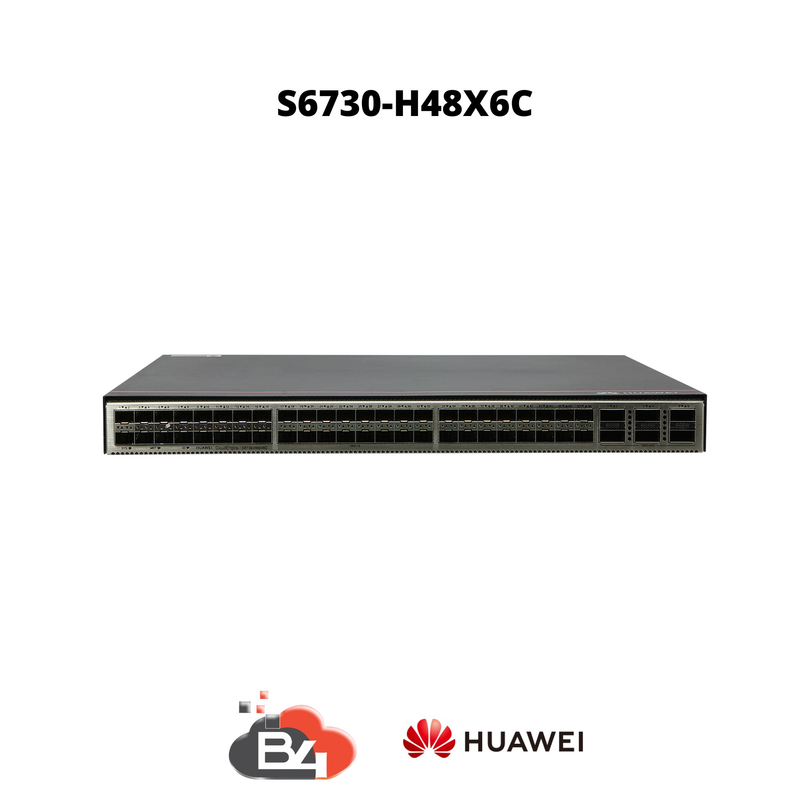
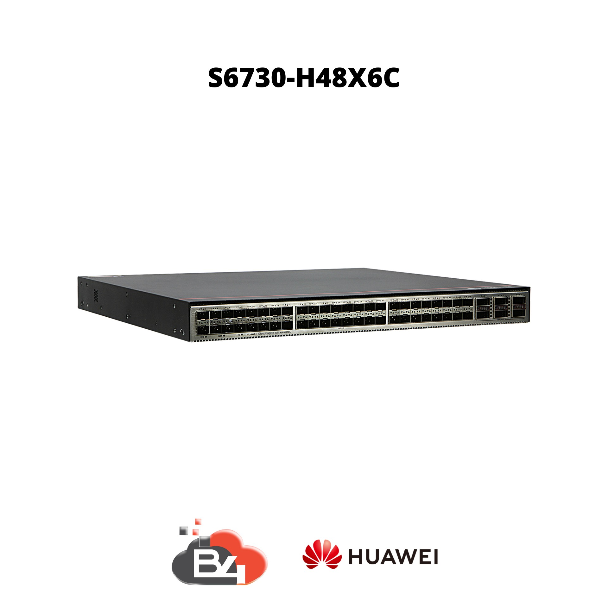

Escolha produtos que mais se encaixa em suas preferencias e converse com um especialista pra conhecer mais sobre os mesmos, como outras especificações e preços.
NE40E-F1A-14H24Q AC
• Dimensões (Altura x Largura x Profundidade): 43.6 mm x 442 mm x 600 mm, 1U de altura • Peso: 11.95 kg • Consumo típico de energia: 450 W • Voltagem de entrada no AC: 90 V ~ 290 V • MTBF: 26.2 anos • MTTR: 2 horas • Módulos de ventilação: São cinco, sendo uma de backup • Fontes de alimentação: São duas, uma de redundância • Capacidade de encaminhamento: 2 x 410 Mpps • Capacidade de switching: 4T • Portas de baixa/média densidade: 241GE/10GE/25GE • Portas de alta densidade: 2040GE/100GE (Já contabilizando as portas combo) • FIB IPv4: 4M • FIB IPv6: 1M • ACL4: 32k • ACL6: 16k • Flash: 128MB • SDRAM: 16GB • Temperatura ambiente p/ operação: 0℃ ～ 45℃
(25 reviews)
Cotação
Via WhatsApp
NE40E-F1A-14H24Q DC
• Dimensões (Altura x Largura x Profundidade): 43.6 mm x 442 mm x 600 mm, 1U de altura • Peso: 11.95 kg • Consumo típico de energia: 450 W • Voltagem de entrada no DC: -48 V ~ -60 V • MTBF: 26.2 anos • MTTR: 2 horas • Módulos de ventilação: São cinco, sendo uma de backup • Fontes de alimentação: São duas, uma de redundância • Capacidade de encaminhamento: 2 x 410 Mpps • Capacidade de switching: 4T • Portas de baixa/média densidade: 241GE/10GE/25GE • Portas de alta densidade: 2040GE/100GE (Já contabilizando as portas combo) • Temperatura ambiente p/ operação: 0℃ ～ 45℃
(20 reviews)
Cotação
Via WhatsApp
NE40E-M2K-B AC
• Dimensões (Altura x Largura x Profundidade): 88.1 mm x 442 mm x 220 mm
• Peso (vazio): 2.2 kg
• Peso (completo): AC: 10.8 kg
• Fontes de alimentação: São duas, uma de redundância
• Voltagem de entrada no AC: 350 W (90VAC to 176VAC) ou 700 W (176VAC to 264VAC)
• Corrente Máxima no AC: 5.4 A
• MTBF: 25 anos
• MTTR: duas horas
• Portas fixas de alta densidade: 440GE/100GE
• Portas fixas de média densidade: 1010GE
• Portas fixas de baixa densidade: 10*1GE
• Slots flexíveis: 2
• Performance de encaminhamento: 480 Mpps
• Capacidade de switching: 1820 Gbps
• Capacidade das portas: 910 Gbps
• IPv4 FIB: 4M
• IPv6 FIB: 1M
• ACL4: 20k
• ACL6: 8K
• H-QoS 5 níveis
• Temperatura de ambiente p/ operação: -20°C ~ +65°C
• Umidade do ar: 5% ~ 95% RH, Sem Condensação
(40 reviews)
Cotação
Via WhatsApp
NE40E-M2K-B DC
• Dimensões (Altura x Largura x Profundidade): 88.1 mm x 442 mm x 220 mm
• Peso (vazio): 2.2 kg
• Peso (completo): DC: 9.6 kg
• Fontes de alimentação: São duas, uma de redundância
• Voltagem de entrada no DC: -40V~-72V
• Corrente Máxima no DC: 18 A
• MTBF: 25 anos
• MTTR: duas horas
• Portas fixas de alta densidade: 440GE/100GE
• Portas fixas de média densidade: 1010GE
• Portas fixas de baixa densidade: 101GE
• Slots flexíveis: 2
• Performance de encaminhamento: 480 Mpps
• Capacidade de switching: 1820 Gbps
• Capacidade das portas: 910 Gbps
• IPv4 FIB: 4M
• IPv6 FIB: 1M
• ACL4: 20k
• ACL6: 8K
• H-QoS 5 níveis
• Temperatura de ambiente p/ operação: -20°C ~ +65°C
• Umidade do ar: 5% ~ 95% RH, Sem Condensação
• Ref: 367 – M2 Series BNG Function License
• Ref: 368 – M2 Series Subscribers Quantity (1k Subscribers)
• Ref: 371 – 1100GE Enable RTU for Fixed Port
• Ref: 398 – M2 Series L3VPN&EVPN Function License –VPN
• Ref: 399 – M2 Series Network Detection Function License
• Ref: 400 – M2 Series NAT Function License
• Ref: 401 – M2 Series IPSEC Function License
(25 reviews)
Cotação
Via WhatsApp
NE8000 M8 AC
• Capacidade máxima de Switching: 2.4 Tbit/s
• Capacidade máxima de Encaminhamento: 453 Mpps
• Capacidade máxima da placa: 200 Gbit/s
• Densidade da capacidade (G/U): 400
• IPU: 2, 1+1
• SFU: 2, 1+1
• Placa de processamento: 6
• MTBF: 100 anos
• MTTR: 0.5 horas
• Dimensões (A x L x P): 132.6 x 442 x 220 mm (3U)
• Peso (chassi): 4.3 kg
• Peso (completo): 17.1 kg
• Fontes de alimentação: São duas, uma de redundância
• Módulo de ventilação: São duas, uma de redundância
• Consumo típico de energia: 530 W
• Voltagem de Entrada: 110V à 220V (bivolt)
• Temperatura de Operação: -20ºC à +55ºC
• Umidade Do Ambiente: 5% – 95% (sem condensação)
• STP/RSTP/MSTP
• BPDU/LACP
• OSPF
• OSPFV3
• IS-IS
• IS-ISV6
• BGP
• BGPv6
• IPv4 Multicast
• IPv6 Multicast
• FTP Server FTP Client
• DHCP Relay & DHCP Server
• DHCPv6 Relay
• L2VPN: VPLS, EVPN, VxLAN
• L3VPN: Suporta rotas estáticas entre CE e PE, BGP, RIP, OSPF e ISIS
• OAM: MPLS OAM, MPLS-TP OAM, VRRP, BFD
• Controladora NE8000 IPU 480GE
• Controladora NE8000 IPU 1T2
• Placa NE8000 10GE
• Placa NE8000 100GE"
(25 reviews)
Cotação
Via WhatsApp
NE8000 M8 DC
• Capacidade máxima de Switching: 2.4 Tbit/s
• Capacidade máxima de Encaminhamento: 453 Mpps
• Capacidade máxima da placa: 200 Gbit/s
• Densidade da capacidade (G/U): 400
• IPU: 2, 1+1
• SFU: 2, 1+1
• Placa de processamento: 8
• Fontes de alimentação: São duas, uma de redundância
• Módulo de ventilação: São duas, uma de redundância
• Dimensões (A x L x P): 132.6 x 442 x 220 mm (3U)
• Peso (completo): 16.5 kg
• Consumo típico de energia: 530 W
• Voltagem de Entrada: -48V à -60V
• Temperatura de Operação: -40ºC à +65ºC
• Umidade Do Ambiente: 5% – 95% (sem condensação)
• Software: STP/RSTP/MSTP, BPDU/LACP, OSPF, OSPFV3, IS-IS, IS-ISV6, BGP, BGPv6, IPv4 Multicast, IPv6 Multicast, FTP Server FTP Client, DHCP Relay & DHCP Server, DHCPv6 Relay, L2VPN: VPLS, EVPN, VxLAN, L3VPN: Suporta rotas estáticas entre CE e PE, BGP, RIP, OSPF e ISIS, OAM: MPLS OAM, MPLS-TP OAM, VRRP, BFD
• Controladoras Disponíveis: Controladora NE8000 IPU 480GE, Controladora NE8000 IPU 1T2
• Placas Disponíveis: Placa NE8000 10GE, Placa NE8000 100GE
(25 reviews)
Cotação
Via WhatsApp
Switchs
Switchs Huawei
Escolha produtos que mais se encaixa em suas preferencias e converse com um especialista pra conhecer mais sobre os mesmos, como outras especificações e preços.

S6730-H24X6C
• Dimensões (Altura x Largura x Profundidade): 43.6 mm x 442.0 mm x 446.0 mm, 1U de altura
• Peso: 8.9kg (na embalagem)
• Capacidade de comutação: 1,68 Tbit/s
• Portas de baixa densidade: 241GE/10GE
• Portas de alta densidade: 640GE/100GE (100GE mediante licença)
• Suporte a Wireless: 1024 AP’s (mediante licença)
• CPU: 4 cores, frequência de 1.4Ghz cada
• Memória RAM: 4GB
• Memória Flash: 2GB
• Consumo de energia com as FAN em 100%: 231 W
• Fonte de alimentação: São duas, uma de backup
• Módulos de refrigeração: São quatro, um de backup
• Suporte VxLAN: Sim
• Suporte SVF: Sim
• Interface WEB: Sim
• ACLv4: 6k
• NetStream & Telemetry: Sim
• MPLS: Sim
• MAC: 128k
• ARP: 140k
• FIBv4: 192k
• FIBv6: 80k
• BGP: Sim (recomendado como borda de CDN)
• Path: S6730-H>S6730-H24X6C>V200R019C10
• Taxa de encaminhamento de pacotes: 490MPPS
• Fontes Compatíveis: Fonte AC, Fonte DC
(20 reviews)
Cotação
Via WhatsApp

S6730-H48X6C
• Dimensões (Altura x Largura x Profundidade): 43.6 mm x 442.0 mm x 446.0 mm, 1U de altura
• Peso: 9.2kg (na embalagem)
• Capacidade de comutação: 2,16 Tbit/s
• Portas de baixa densidade: 481GE/10GE
• Portas de alta densidade: 640GE/100GE
• Suporte a Wireless: 1024 AP's (mediante licença)
• CPU: 4 cores, frequência de 1.4Ghz cada
• Memória RAM: 4GB
• Memória Flash: 2GB
• Consumo de energia com as FAN em 100%: 274 W
• Fonte de alimentação: São duas, uma de backup
• Módulos de refrigeração: São quatro, um de backup
• *PoE: Não suportado
• Suporte VxLAN: Sim
• Suporte SVF: Sim
• Interface WEB: Sim
• ACLv4: 6k
• NetStream & Telemetry: Sim
• MPLS: Sim
• MAC: 128k
• ARP: 140k
• FIBv4: 192k
• FIBv6: 80k
• BGP: Sim (recomendado como borda de CDN)
• Fontes Compatíveis: Fonte AC, Fonte DC
(40 reviews)
Cotação
Via WhatsApp
Olt's
Olt's Huawei
Escolha produtos que mais se encaixa em suas preferencias e converse com um especialista pra conhecer mais sobre os mesmos, como outras especificações e preços.
MA5800-X2
• Dimensões (A x L x C): 88.1 mm x 442.0 mm x 268.7 mm (Sem o suporte para o rack)
• Peso (completa): 9.4kg
• PSU: AC + Bateria/DC (1+1 backup)
• Voltagem no DC: -48 V/-60 V
• Voltagem no AC: 110 V/220 V
• Pico de corrente AC: 8 A
• Pico de corrente DC: 20 A
• Temperatura ambiente: 25ºC
• H901MPSC (MPU)
• Largura de banda: 80 Gbit/s
• Uplink da placa: 4x10GE/1GE
• Tabela MAC: 262.143
• Número máximo de ONTs: 4096 (GPON)
• Tabela de roteamento IPv4: 65.536
• Tabela de roteamento IPv6: 16.384
• Tabela ARP: 32.768 (V100R019C00)
• BGP4: Suportado
• OSPFv3: Suportado
• IS-IS: Suportado
(25 reviews)
Cotação
Via WhatsApp
MA5800 – X15
• Dimensões (L x P x H): 19” (442 mm x 287 mm x 486 mm)
• Número máximo de portas em uma subtração: 240 x GPON / EPON, 720 x GE / FE, 120 x 10G GPON / 10G EPON, 120 x 10G GE, 480 x E1
• Capacidade de comutação do sistema: 7 Tbit / s
• Número máximo de endereços MAC: 262,143
• Número Máximo de ARP / Entradas de Roteamento: 64K
• Temperatura ambiente: -40 ° C a 65 ° C *
• Faixa de tensão de trabalho: -38.4V DC para -72V DC
• Recursos de camada 2: VLAN + encaminhamento MAC, reencaminhamento SVLAN + CVLAN, PPPoE + e opção DHCP82
• Recursos de camada 3: Roteamento estático, RIP / RIPng, OSPF / OSPFv3, IS-IS, BGP / BGP4 +, ARP, DHCP relay e VRF
• MPLS & PWE3: MPLS LDP, MPLS RSVP-TE, MPLS OAM, MPLS BGP IP VPN, comutação de proteção de túnel, TDM / ETH PWE3 e troca de proteção PW
• IPv6: Empilhamento duplo IPv4 / IPv6, encaminhamento IPv6 L2 e L3 e retransmissão DHCPv6
• Multicast: IGMP v2 / v3, proxy / snooping IGMP, MLD v1 / v2, MLD Proxy / Snooping e multicast IPTV baseado em VLAN
• QoS: Classificação de tráfego, processamento de prioridade, policiamento de tráfego baseado em TrTCM, WRED, modelagem de tráfego, HqoS, PQ / WRR / PQ + WRR e ACL
• Confiabilidade do sistema: GPON tipo B / proteção tipo C, 10G GPON proteção tipo B, BFD, ERPS (G.8032), MSTP, intra-placa e inter-placa LAG, Upgrade de Software em Serviço (ISSU) da placa de controle, 2 placas de controle e 2 placas de alimentação para proteção de redundância, detecção e rectificação de falhas da placa em serviço e controle de sobrecarga de serviço.
(25 reviews)
Cotação
Via WhatsApp
MA5800 – X17
• 17 Slots de serviço
• GPON / 10GPON, 40G / 100GPON pronto
• 262144 Endereço MAC,
• 8 vezes superior ao MA5680T
• Suporta mais de 8 vezes o endereço MAC e a tabela ARP mais do que MA5680T
• Suporta 4 * portas upstream GE / 10GE incorporadas na placa de controle principal MPLA / MPLB
• Suporta GPHF de porta GPON de 16 portas, GPSF
• Suporta placa de interface 10 portas 10GPON XGHD, TWED
• Suporta 1:64 eOTDR
• Suporta o padrão DOCSIS 3.1
• Capacidade de comutação do sistema 7 Tbit / s
• Largura de banda máxima por slot H901MPLB: 200 Gbit / s
• H901MPLA: 100 Gbit / s
• Número máximo de endereço MAC 262144
• Número máximo de entradas ARP / roteamento 65536
• Número máximo de usuários de vídeo concorrentes de 4K 16000
• Portas GPON 272
• 10G GPON portas 136
• Portas GE / FE 816
• Portas 10GE 136
• Gabinete suportado N63E-22
• Painel de controle
• H901MPLB Ele fornece 4 portas de transmissão upstream GE / 10GE e suporta compartilhamento de carga. Por padrão, o MA5800 se conecta à rede a montante através da placa de controle H901MPLA
• H901CKUA Suporta funções de relógio stratum-3 trabalhando com MPLB e MPLA
• Placa de interface Upstream
• H901NXED Placa de interface Enhanced 8-port 10GE upastream, suportando a transmissão upstream 10GE / GE Ethernet. O NXED é usado quando as portas a montante atualmente fornecidas no MA5800 não são suficientes.
• Placa de interface universal
• H901CIUA Fornece interfaces de entrada e saída de sinal de tempo / relógio síncrono, parâmetro de alarme / interface de entrada e saída de valor booleano. Portas série RS485 e fornece portas Ethernet de transmissão transparente.
• Placa de serviço
• H901GPHF Fornece 16 portas GPON para serviços de acesso
• H901GPSF Fornece 16 portas GPON para serviços de acesso domiciliar
• H901XGHD Fornece 8 portas GPON 10G assimétricas para serviços de acesso.
• H901TWED Fornece 8 portas simétricas 10G GPON para serviços de acesso.
• H901EDSH Placa a montante E1 de 32 canais, suportando o modo TDM nativo.
• H901OGHK Placa de interface ótica GE / FE agregada de 48 portas, que suporta até 48 canais de GE / FE
• H901
(20 reviews)
Cotação
Via WhatsApp
MA5800 – X7
• Dimensões (L x P x H): 442 mm x 268,7 mm x 263,9 mm
• Número máximo de portas em uma subtração: 112 x GPON / EPON, 336 x GE / FE, 56 x 10G GPON / 10G EPON, 56 x 10G GE, 224 x E1
• Capacidade de comutação do sistema: 7 Tbit / s
• Número máximo de endereços MAC: 262,143
• Número Máximo de ARP / Entradas de Roteamento: 64K
• Temperatura ambiente: -40 ° C a 65 ° C *
• O MA5800 pode começar a uma temperatura mais baixa de -25 ° C e funcionar a -40 ° C. A temperatura de 65 ° C refere-se à maior temperatura medida no orifício de entrada de ar
• Faixa de tensão de trabalho: -38.4V DC para -72V DC
• Recursos de camada 2: VLAN + encaminhamento MAC, reencaminhamento SVLAN + CVLAN, PPPoE + e opção DHCP82
• Recursos de camada 3: Roteamento estático, RIP / RIPng, OSPF / OSPFv3, IS-IS, BGP / BGP4 +, ARP, DHCP relay e VRF
• MPLS & PWE3: MPLS LDP, MPLS RSVP-TE, MPLS OAM, MPLS BGP IP VPN, comutação de proteção de túnel, TDM / ETH PWE3 e troca de proteção PW
• IPv6: Empilhamento duplo IPv4 / IPv6, encaminhamento IPv6 L2 e L3 e retransmissão DHCPv6
• Multicast: IGMP v2 / v3, proxy / snooping IGMP, MLD v1 / v2, MLD Proxy / Snooping e multicast IPTV baseado em VLAN
• QoS: Classificação de tráfego, processamento de prioridade, policiamento de tráfego baseado em TrTCM, WRED, modelagem de tráfego, HqoS, PQ / WRR / PQ + WRR e ACL
• Confiabilidade do sistema: GPON tipo B / proteção tipo C, 10G GPON proteção tipo B, BFD, ERPS (G.8032), MSTP, intra-placa e inter-placa LAG, Upgrade de Software em Serviço (ISSU) da placa de controle, 2 placas de controle e 2 placas de alimentação para proteção de redundância, detecção e retificação de falhas da placa em serviço e controle de sobrecarga de serviço.
(20 reviews)
Cotação
Via WhatsApp
Terminais
Terminais Huawei
Escolha produtos da marca Huawei e converse com um especialista pra conhecer mais sobre os mesmos, como outras especificações e preços.
ONT EG8010H
• Dimensões (Comprimento x Largura x Altura): 83mm x 69mm x 28mm
• Peso: Cerca de 70g
• Temperatura de Funcionamento: 0ºC ~ 40ºC
• Fonte de Alimentação: 12V – 1A (bivolt)
• Consumo máximo de energia: 2,5 W
• Porta ethernet: 1*1GE
• Indicadores (LEDs): POWER/PON/LOS/LAN
• Porta óptica: Classe B+, Sensibilidade entre -8dBm até -27dBm
• O&M: Possui interface gráfica
• Segurança: Filtragem de endereços MAC
• QoS: Suporte ao protocolo 802.1p
• Multicast: Snooping de IGMP v2/v3
• PPPoE/DHCP: Não suportado (equipamento bridge)
(40 reviews)
Cotação
Via WhatsApp
ONT EG8120L
• Dimensões (Altura x Largura x Profundidade): 30mm x 115mm x 94mm
• Peso: Cerca de 155g
• Temperatura de funcionamento: 0ºC ~ 40ºC
• Consumo máximo de energia: 4,9 W
• Fonte de alimentação: 12V – 1A (bivolt)
• Interfaces: Porta óptica + 1POTS/1GE/1FE
• Indicadores (LEDs): POWER/PON/LOS/LAN/TEL
• Porta óptica: Classe B+, sensibilidade de -8dBm até -27dBm
• Segurança: Firewall e filtragem de MAC
• PPPoE/DHCP: Suportado
• QoS: Suportado
• Multicast: IGMP v2/v3 snooping
(20 reviews)
Cotação
Via WhatsApp
ONT EG8141A5
• Dimensões (Altura x Largura x Profundidade): 30mm x 152mm x 105mm (sem antenas)
• Peso: Cerca de 180g
• Temperatura de funcionamento: 0ºC ~ 40ºC
• Consumo máximo de energia: 7,15 W
• Fonte de alimentação: 12V – 1A (bivolt)
• Interfaces: Porta óptica + 1POTS/1GE/3FE
• Wi-Fi: 2.4Ghz (single-band)
• Porta óptica: Classe B+, sensibilidade de -8dBm até -27dBm
• Conector óptico: SC/APC
• Indicadores (LEDs): POWER/PON/LOS/LAN/TEL/WLAN/WPS
• Autenticação por 802.1x: Suportado
• WLAN: 2 x 2 MIMO e ganho de 5dBi por antena
• SSIDs: 4
• WMM/WPS: Suportado
• QoS: Suportado
• Segurança: Firewall e filtros de MAC/IP/URL
• Multicast: IGMP v2/v3 proxy/snooping
• PPPoE/DHCP: Suportado
(20 reviews)
Cotação
Via WhatsApp
ONT EG8145V5
• Dimensões (Altura x Largura x Profundidade): 30mm x 173mm x 120mm (Sem antena externa)
• Peso: Cerca de 250g
• Temperatura de funcionamento: 0ºC ~ 40ºC
• Consumo máximo de energia: 5,3 W
• Fonte de alimentação: 12V – 1A (bivolt)
• Interfaces: Porta óptica + 1POTS/4GE/1USB 2.0
• Wi-Fi: 2.4Ghz – 5Ghz (dual-band)
• Conector óptico: SC/APC
• Indicadores (LEDs): POWER/PON/LOSS/LAN/TEL/USB/WLAN/WPS
• Controle dos pais: Suportado
• Programação (on/off) do Wi-Fi: Suportado
• Autenticação por 802.1x: Suportado
• Porta óptica: Classe B+, Sensibilidade de -8dBm até -27dBm
• Porta USB: Partilha de dados via FTP e impressão baseada em SAMBA
• WLAN: 2×2 MIMO, com 5dBi por antena
• SSIDs: 4
• WMM e WPS: Suportado
• Multicast: IGMP v2/v3 proxy/snooping
• QoS: Suportado
• Segurança: Firewall, filtros de MAC/IP/URL
• PPPoE/DHCP: Suportado
(20 reviews)
Cotação
Via WhatsApp
ONT EG8245H
• Dimensões (Altura x Largura x Comprimento): 176mm x 138.5mm x 28mm (sem antenas)
• Peso: Cerca de 280g
• Temperatura de operação: 0ºC ~ 40ºC
• Consumo máximo de energia: 16.5 W
• Fonte de alimentação: 12V – 1A (bivolt)
• Interfaces: Porta óptica + 2POTS/4GE/1USB
• Wi-Fi: 2.4Ghz (single-band)
• Indicadores (LEDs): POWER/PON/LOS/LAN/TEL/USB/WLAN/WPS
• Porta óptica: Classe B+, sensibilidade de 8dBm até -27dBm
• Conector óptico: SC/APC
• Autenticação por 802.1x: Suportado
• WLAN: 2 x 2 MIMO, 5dBi por antena
• SSIDs: 4
• WMM/WPS: Suportado
• PPPoE/DHCP: Suportado
• Segurança: Firewall e filtros de MAC/IP/URL
• Multicast: IGMP v2/v3 proxy/snooping
• QoS: Suportado